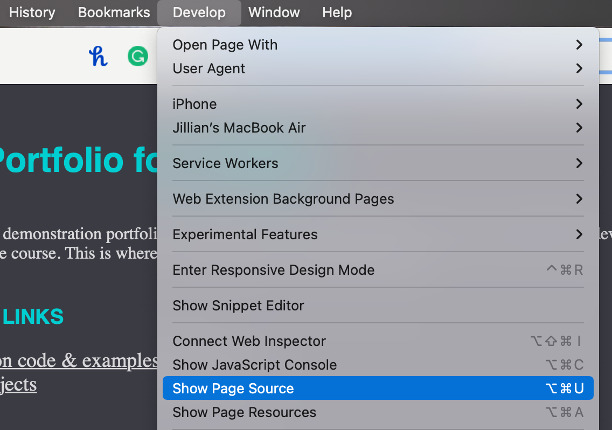

net.art series
Research Section
Page 1

For the majority of my research, I heavily referenced the source code of other sites to see how they achieved elements and layouts that I wanted for my series.
To view any public code, I had to add the 'Develop" tool to my toolbar. From there I could open and view the source code of any html, css, or javascript online.